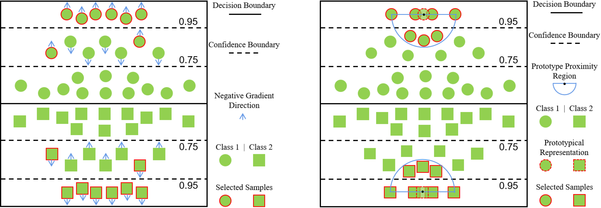
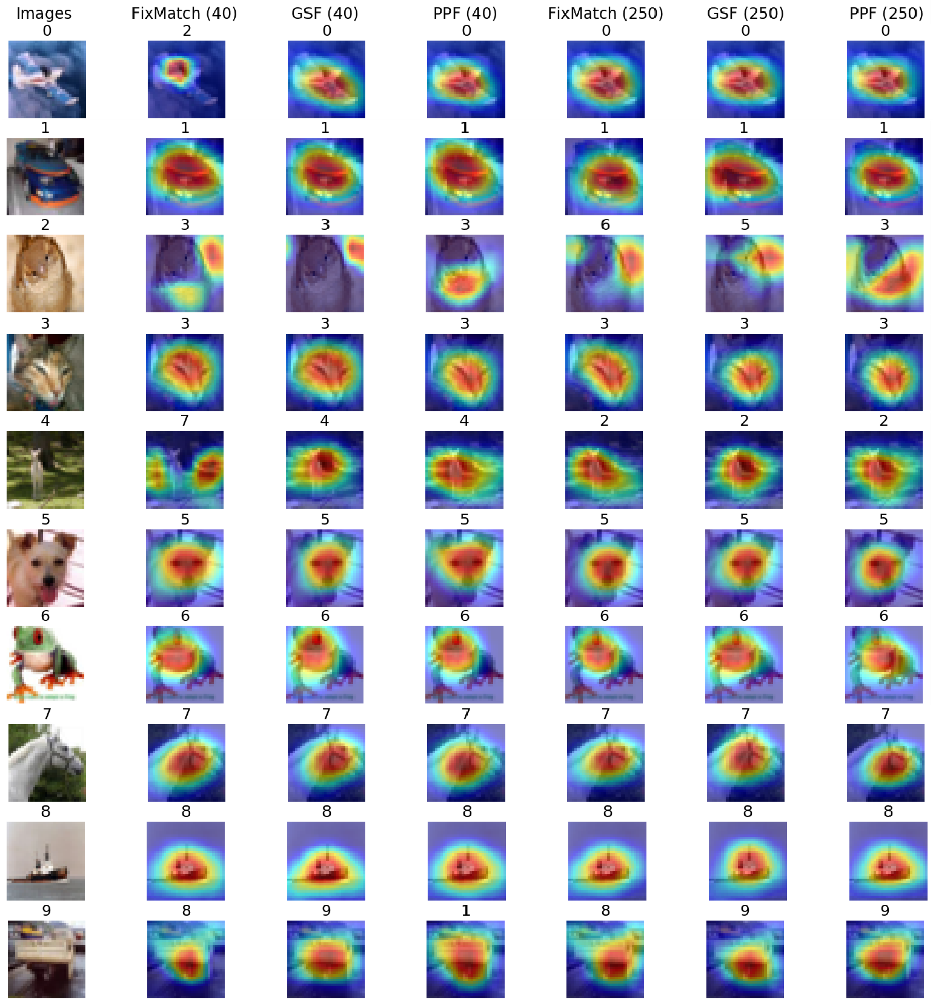
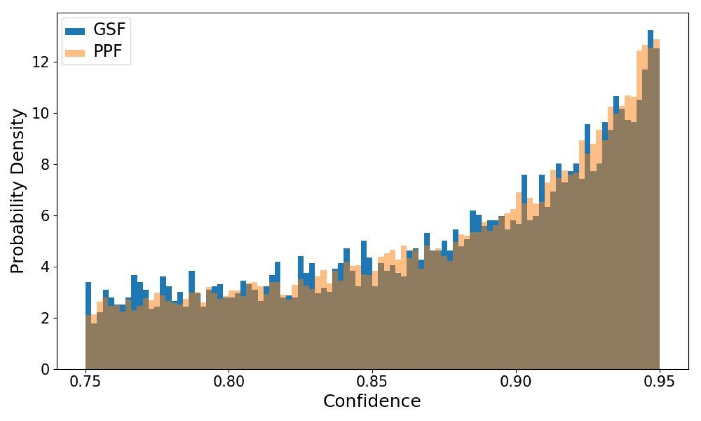

Towards Discovering the Effectiveness of Moderately Confident Samples for Semi-Supervised Learning
|
South China University of Technology1
|
Teaser
|

|
|
We propose to utilize moderately confident samples for better model optimization.
Based on the principle of local optimization landscape consistency, we propose Taylor expansion inspired filtration framework,
relying on the Taylor expansion of the loss function to inspire the key measurement index of sample filtration, i.e., gradient and feature of finite orders.
We derive two novel filters from this framework: gradient synchronization filter (GSF) selecting samples with similar optimization dynamics to the most reliable one,
and prototype proximity filter (PPF) selecting samples near semantic prototypes.
|
Abstract
|
Semi-supervised learning (SSL) has been studied for a long time to solve vision tasks in data-efficient application scenarios.
SSL aims to learn a good classification model using a few labeled data together with large-scale unlabeled data.
Recent advances achieve the goal by combining multiple SSL techniques, e.g., self-training and consistency regularization.
From unlabeled samples, they usually adopt a confidence filter (CF) to select reliable ones with high prediction confidence.
In this work, we study whether the moderately confident samples are useless and how to select the useful ones to improve model optimization.
To answer these problems, we propose a novel Taylor expansion inspired filtration (TEIF) framework,
which admits the samples of moderate confidence with similar feature or gradient to the respective one averaged over the labeled and highly confident unlabeled data.
It can produce a stable and new information induced network update, leading to better generalization.
Two novel filters are derived from this framework and can be naturally explained in two perspectives.
One is gradient synchronization filter (GSF), which strengthens the optimization dynamic of fully-supervised learning;
it selects the samples whose gradients are similar to class-wise majority gradients.
The other is prototype proximity filter (PPF), which involves more prototypical samples in training to learn better semantic representations;
it selects the samples near class-wise prototypes.
They can be integrated into SSL methods with CF.
We use the state-of-the-art FixMatch as the baseline.
Experiments on popular SSL benchmarks show that we achieve the new state of the art.
|
Background & Motivation
|
|
|
Diagram of combining self-training and consistency regularization.
The two techniques would be uninformative when the model predicts a uniform distribution over classes.
Confidence filtering abandons the samples whose prediction confidences (ranged in [0,1]) are lower than a predefined high threshold (e.g., 0.95).
It is reasonable that the least confident samples are extremely unreliable.
But are all the moderately confident samples useless, e.g., with confidence ranged in (0.75,0.95)?
Is there any way to pick out the useful ones to enhance the optimization power applied to the model?
|
Highlights
A Novel Framework of Taylor Expansion Inspired Filtration
|
In this work, we solve the questions by introducing a novel framework of Taylor expansion inspired filtration (TEIF).
The Tayor formula of the cross-entropy loss function with respect to the feature of one sample with true or pseudo label mainly includes terms of the multiplication of gradient and feature of finite orders.
To make the change of loss consistent in the neighborhood of the feature, this framework selects the samples of moderate confidence, whose feature or gradient is similar to the respective one averaged over the labeled and highly confident unlabeled data, which are the most reliable.
In essence, the samples with similar local manifolds are selected.
Hence, the final network update is still close to the one determined by the most reliable samples and further incorporates the new information contained in the selected samples of moderate confidence, such that the model optimization could be steady and improved.
From this framework, two novel filters are derived to select the helpful samples from the moderately confident unlabeled data. The selected samples together with the highly confident ones are then used to train the classification model.
|
Gradient Synchronization Filter (GSF)
|
The first filter based on gradients assumes that one moderately confident sample is useful if it follows the optimization dynamic of fully-supervised learning.
We can approximate the optimization dynamic by class-wise majority gradients, which are computed on features of the labeled and highly confident unlabeled samples.
From those moderately confident samples, we select the ones that have similar feature gradients to the corresponding majority gradient. We thus term this method as gradient synchronization filter (GSF).
An illustrative example of sample selection in GSF.
|
Prototype Proximity Filter (PPF)
|
The second filter based on features assumes that one moderately confident sample is useful if it has a certain level of prototypicality.
The samples near prototypes are selected from those moderately confident unlabeled data.
We thus term this method as prototype proximity filter (PPF).
An illustrative example of sample selection in PPF.
|
Experiments
Ablation Study and Learning Analysis
|
R1: Moderate Confidence Bounding
In the following figure, it is observed that the performance is almost always benign and stable in the respective small-value ranges of the lower and upper bounds.
A possible reason is that the increase in the number of selected unlabeled samples
(i.e., more samples are selected at smaller values) could compensate the negative effects caused by including low-quality samples in training.
As the lower and upper bounds increase, the performance stays almost the same on the 250-label setting whereas it does not on the 40-label setting,
revealing that the sensitivity of one SSL method to the hyperparameters is increased with fewer labels per class due to less reliable pattern learning.
Note that when the upper bound has a value of 1, all unlabeled samples for training are selected by our GSF or PPF,
and thus all highly confident samples may be discarded.
In this case, the error rates go up, suggesting that the use of highly confident samples is indispensable for learning a good model.

Error rates w.r.t. the lower (left) and upper (center) bounds of moderate confidence, and the gradient synchronization threshold of our proposed GSF (right) on 40- and 250-label settings.
|
R2: Gradient Synchronization Thresholding
In the figure above, we can observe that with 25 labels per class, the error rate fluctuates very slightly with the increase of τs,
indicating that more highly confident samples (on account of more labels) can build a better foundation of model optimization for pattern learning.
Hence, the selected low-quality samples have less adverse impact on the learned model’s classification behavior.
On the 40-label setting, the performance changes considerably as varying the value of τs,
confirming that the hyperparameter sensitivity is inversely proportional to the number of labels available.
|
R3: Sample Selection Ratio
As the training process proceeds, these ratios first increase and then stabilize at the level close to 1,
indicating that an increasing number of unlabeled samples participate in training;
on the 250-label setting, these ratios are consistently higher than those on the 40-label setting,
manifesting that more experience, more confidence in making decisions;
the gap between the paired ratios of all selected samples and highly confident ones,
i.e., the ratio of selected moderately confident samples,
is big in the earlier stage and decreases in the later stage
since the instinct of self-training is to produce more and more samples of high confidence.
In the following Fig. c, we observe that our GSF and PPF enjoy a lower mislabeled ratio,
suggesting that our methods can learn better decision boundaries closer to the ground-truth ones.

Ratios of all selected samples (“ALL”) and highly confident ones (“HC”) in the unlabeled batch for 40- (left) and 250-label (center) settings, and mislabeled ratio (right) in the selected pseudo-labeled set on the 40-label setting.
|
Saliency Map Visualization
|
In the following figure, it is observed that our methods learn better feature representations that capture more complete semantic patterns, e.g., first example.

Visualizing the Grad-CAM saliency maps from the baseline FixMatch and our proposed GSF and PPF on 40- and 250-label settings.
Note that the number on top of each picture means the ground-truth (first column) or predicted labels (other columns).
|
Confidence Spectrum
|
In the following figure, we observe that the higher the confidence of a sample, the more inclined our method is to select it.

Spectrum of confidence for samples selected by GSF and PPF. (128th epoch, CIFAR10@40).
|
Comparison with SOTA
|
Experiments on SSL benchmarks show that our methods based on FixMatch achieve significant improvements in accuracy, verifying their efficacy in filtering samples of moderate confidence.
Error rates (%) for CIFAR-10, CIFAR-100, and SVHN.
|
BibTeX
@inproceedings{tang2022towards,
title={Towards Discovering the Effectiveness of Moderately Confident Samples for Semi-Supervised Learning},
author={Tang, Hui and Jia, Kui},
booktitle={Proceedings of the IEEE/CVF Conference on Computer Vision and Pattern Recognition},
pages={14658--14667},
year={2022}
}
Acknowledgements
Based on a template by Keyan Chen.